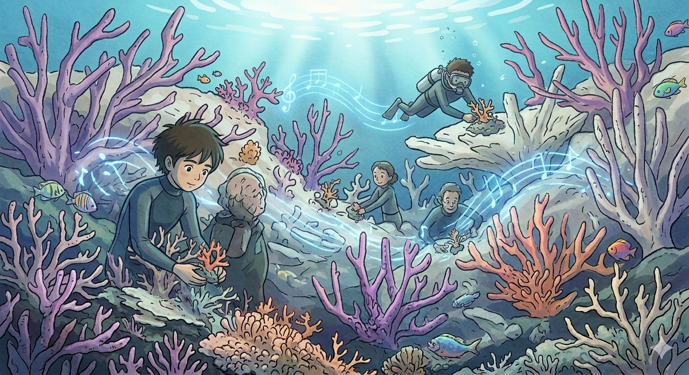

Act III · Windows To The Deep
See The Ocean.
See The Ocean.
Feel The Truth.
A visual journey through the beauty we are fighting to protect,
and the damage we can no longer ignore.

Whale Warning
A massive cargo ship blasts harsh red sound waves, distorting the delicate blue echoes of a mother whale and her calf.

Ghost Nets
A massive, forgotten "ghost net" drifts like a giant, suffocating spiderweb over ancient rock formations.

Bleached Reefs
A coral garden rapidly dying; what was once vibrant is now a ghostly, skeletal white due to warming waters.

A Call to Action
Action is taken. Returning underwater, we see a team of divers. Crucially, they are led by the young character from the cliffside.
Listening to the Echoes
The ocean is not silent; it is a symphony of soft, glowing sound. We observe this magical, aquatic language as it travels through the dark water.